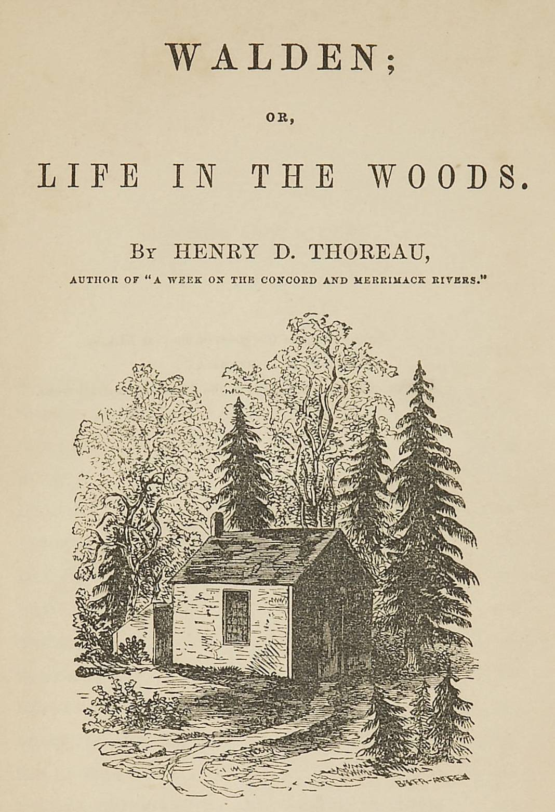

Walden, and On The Duty Of Civil Disobedience
والدن، وواجب العصيان المدني
الفلسفة
ملك عام
ترجمة كاملة
ثورو يبني كوخه على بركة والدن ويعيش عامين في عزلة واعية، فيكتب أحد أنصع كتب الفكر الأمريكي: تدبير المعيشة، الاقتصاد، العزلة، حقل الفول، الربيع — ثم ملحق «واجب العصيان المدني» الذي غيّر تاريخ المقاومة من غاندي إلى مارتن لوثر كينغ. ترجمة كاملة للتاريخين معاً.
| المؤلف | هنري ديفيد ثورو — Henry David Thoreau |
| سنة النص الأصلي | ١٨٥٤ |
| كلمات المصدر (الإنجليزية) | ١١٥٨٢٠ |
| كلمات الترجمة (العربية) | ٩٢٨١٠ |
| مقاطع الترجمة المدققة | ٦٤ |
| مدة القراءة التقريبية | ≈ ٢١١٠ دقيقة |
الترخيص والحقوق: النص الأصلي (١٨٥٤) في الملك العام. هذه الترجمة العربية منشورة بإذن حر. المصدر: gutenberg.org/ebooks/205